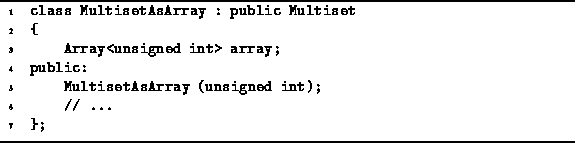

Data Structures and Algorithms
with Object-Oriented Design Patterns in C++
Data Structures and Algorithms
with Object-Oriented Design Patterns in C++A regular set may contain either zero or one instance of a particular item. As shown in the preceding section if the number of possible items is not excessive, we may use an array of Boolean variables to keep track of the number of instances of a particular item in a regular set. The natural extension of this idea for a multiset is to keep a separate count of the number of instances of each item in the multiset.
Program  declares the class MultisetAsArray.
The multiset is implemented using
an array of counters.
Each counter is an unsigned int in this case.
declares the class MultisetAsArray.
The multiset is implemented using
an array of counters.
Each counter is an unsigned int in this case.

Program: MultisetAsArray Class Definition
 Copyright © 1997 by Bruno R. Preiss, P.Eng. All rights reserved.
Copyright © 1997 by Bruno R. Preiss, P.Eng. All rights reserved.